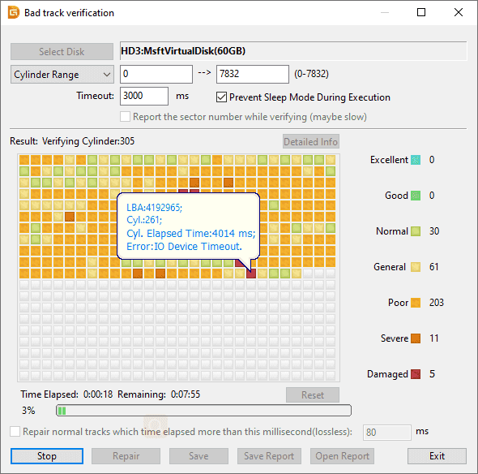

Comprendre l'état de santé de votre disque dur
DiskGenius est un outil de gestion de disque puissant qui permet de partitionner, récupérer des données, mais surtout de vérifier l'intégrité physique de votre support (HDD, SSD, Clé USB).
L'image ci-dessous montre un test de "Bad Tracks" (secteurs défectueux). Chaque petit carré représente une zone du disque :

Si votre disque ressemble à cette capture d'écran, arrêtez de l'utiliser immédiatement. Plus vous forcez le scan, plus vous risquez d'endommager les têtes de lecture.
C'est un laboratoire ultra-propre où des experts ouvrent le disque pour remplacer les pièces internes (bras de lecture, moteur) sans qu'une seule poussière ne vienne détruire les plateaux magnétiques. C'est l'ultime recours quand le logiciel ne suffit plus.